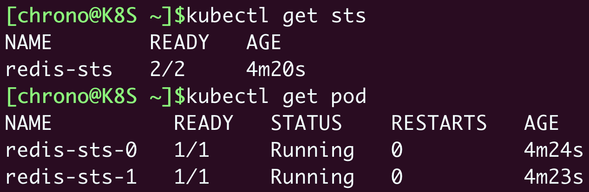
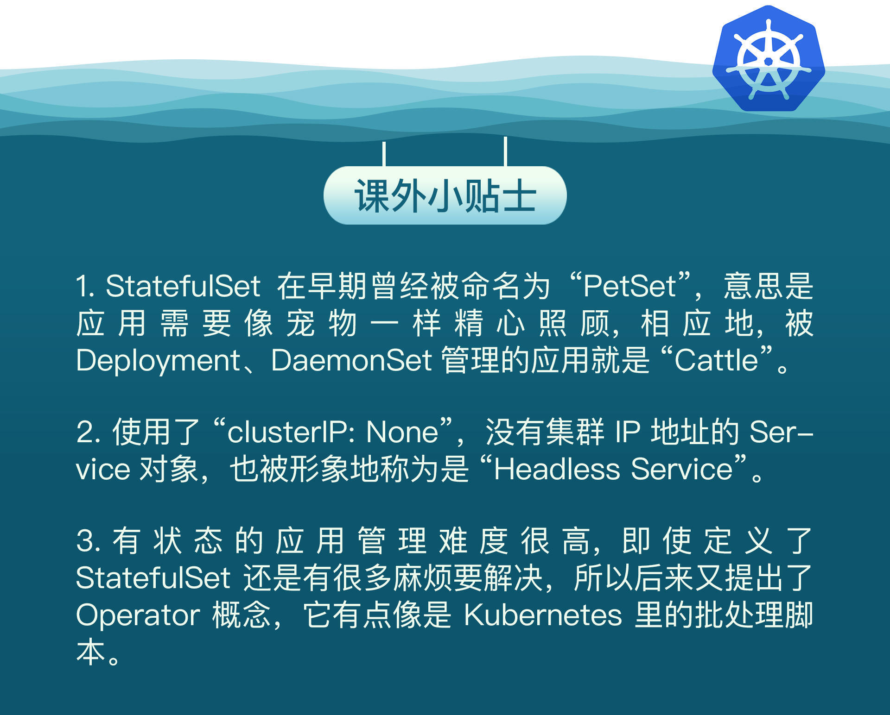

- 00 开篇词 迎难而上，做云原生时代的弄潮儿.md
- 00 课前准备 动手实践才是最好的学习方式.md
- 01 初识容器：万事开头难.md
- 02 被隔离的进程：一起来看看容器的本质.md
- 03 容器化的应用：会了这些你就是Docker高手.md
- 04 创建容器镜像：如何编写正确、高效的Dockerfile.md
- 05 镜像仓库：该怎样用好Docker Hub这个宝藏.md
- 06 打破次元壁：容器该如何与外界互联互通.md
- 07 实战演练：玩转Docker.md
- 08 视频：入门篇实操总结.md
- 09 走近云原生：如何在本机搭建小巧完备的Kubernetes环境.md
- 10 自动化的运维管理：探究Kubernetes工作机制的奥秘.md
- 11 YAML：Kubernetes世界里的通用语.md
- 12 Pod：如何理解这个Kubernetes里最核心的概念？.md
- 13 Job_CronJob：为什么不直接用Pod来处理业务？.md
- 14 ConfigMap_Secret：怎样配置、定制我的应用.md
- 15 实战演练：玩转Kubernetes（1）.md
- 16 视频：初级篇实操总结.md
- 17 更真实的云原生：实际搭建多节点的Kubernetes集群.md
- 18 Deployment：让应用永不宕机.md
- 19 Daemonset：忠实可靠的看门狗.md
- 20 Service：微服务架构的应对之道.md
- 21 Ingress：集群进出流量的总管.md
- 22 实战演练：玩转Kubernetes（2）.md
- 23 视频：中级篇实操总结.md
- 24 PersistentVolume：怎么解决数据持久化的难题？.md
- 25 PersistentVolume + NFS：怎么使用网络共享存储？.md
- 26 StatefulSet：怎么管理有状态的应用？.md
- 27 滚动更新：如何做到平滑的应用升级降级？.md
- 28 应用保障：如何让Pod运行得更健康？.md
- 29 集群管理：如何用名字空间分隔系统资源？.md
- 30 系统监控：如何使用Metrics Server和Prometheus？.md
- 31 网络通信：CNI是怎么回事？又是怎么工作的？.md
- 32 实战演练：玩转Kubernetes（3）.md
- 33 视频：高级篇实操总结.md
- 加餐 docker-compose：单机环境下的容器编排工具.md
- 加餐 谈谈Kong Ingress Controller.md
- 结束语 是终点，更是起点.md
26 StatefulSet：怎么管理有状态的应用？
你好，我是Chrono。
在中级篇里，我们学习了Deployment和DaemonSet两种API对象，它们是在Kubernetes集群里部署应用的重要工具，不过它们也有一个缺点，只能管理“无状态应用”（Stateless Application），不能管理“有状态应用”（Stateful Application）。
“有状态应用”的处理比较复杂，要考虑的事情很多，但是这些问题我们其实可以通过组合之前学过的Deployment、Service、PersistentVolume等对象来解决。
今天我们就来研究一下什么是“有状态应用”，然后看看Kubernetes为什么会设计一个新对象——StatefulSet来专门管理“有状态应用”。
什么是有状态的应用
我们先从PersistentVolume谈起，它为Kubernetes带来了持久化存储的功能，能够让应用把数据存放在本地或者远程的磁盘上。
那么你有没有想过，持久化存储，对应用来说，究竟意味着什么呢？
有了持久化存储，应用就可以把一些运行时的关键数据落盘，相当于有了一份“保险”，如果Pod发生意外崩溃，也只不过像是按下了暂停键，等重启后挂载Volume，再加载原数据就能够满血复活，恢复之前的“状态”继续运行。
注意到了吗？这里有一个关键词——“状态”，应用保存的数据，实际上就是它某个时刻的“运行状态”。
所以从这个角度来说，理论上任何应用都是有状态的。
只是有的应用的状态信息不是很重要，即使不恢复状态也能够正常运行，这就是我们常说的“无状态应用”。“无状态应用”典型的例子就是Nginx这样的Web服务器，它只是处理HTTP请求，本身不生产数据（日志除外），不需要特意保存状态，无论以什么状态重启都能很好地对外提供服务。
还有一些应用，运行状态信息就很重要了，如果因为重启而丢失了状态是绝对无法接受的，这样的应用就是“有状态应用”。
“有状态应用”的例子也有很多，比如Redis、MySQL这样的数据库，它们的“状态”就是在内存或者磁盘上产生的数据，是应用的核心价值所在，如果不能够把这些数据及时保存再恢复，那绝对会是灾难性的后果。
理解了这一点，我们结合目前学到的知识思考一下：Deployment加上PersistentVolume，在Kubernetes里是不是可以轻松管理有状态的应用了呢？
的确，用Deployment来保证高可用，用PersistentVolume来存储数据，确实可以部分达到管理“有状态应用”的目的（你可以自己试着编写这样的YAML）。
但是Kubernetes的眼光则更加全面和长远，它认为“状态”不仅仅是数据持久化，在集群化、分布式的场景里，还有多实例的依赖关系、启动顺序和网络标识等问题需要解决，而这些问题恰恰是Deployment力所不及的。
因为只使用Deployment，多个实例之间是无关的，启动的顺序不固定，Pod的名字、IP地址、域名也都是完全随机的，这正是“无状态应用”的特点。
但对于“有状态应用”，多个实例之间可能存在依赖关系，比如master/slave、active/passive，需要依次启动才能保证应用正常运行，外界的客户端也可能要使用固定的网络标识来访问实例，而且这些信息还必须要保证在Pod重启后不变。
所以，Kubernetes就在Deployment的基础之上定义了一个新的API对象，名字也很好理解，就叫StatefulSet，专门用来管理有状态的应用。
如何使用YAML描述StatefulSet
首先我们还是用命令 kubectl api-resources 来查看StatefulSet的基本信息，可以知道它的简称是 sts，YAML文件头信息是：
apiVersion: apps/v1
kind: StatefulSet
metadata:
name: xxx-sts
和DaemonSet类似，StatefulSet也可以看做是Deployment的一个特例，它也不能直接用 kubectl create 创建样板文件，但它的对象描述和Deployment差不多，你同样可以把Deployment适当修改一下，就变成了StatefulSet对象。
这里我给出了一个使用Redis的StatefulSet，你来看看它与Deployment有什么差异：
apiVersion: apps/v1
kind: StatefulSet
metadata:
name: redis-sts
spec:
serviceName: redis-svc
replicas: 2
selector:
matchLabels:
app: redis-sts
template:
metadata:
labels:
app: redis-sts
spec:
containers:
- image: redis:5-alpine
name: redis
ports:
- containerPort: 6379
我们会发现，YAML文件里除了 kind 必须是“StatefulSet”，在 spec 里还多出了一个“serviceName”字段，其余的部分和Deployment是一模一样的，比如 replicas、selector、template 等等。
这两个不同之处其实就是StatefulSet与Deployment的关键区别。想要真正理解这一点，我们得结合StatefulSet在Kubernetes里的使用方法来分析。
如何在Kubernetes里使用StatefulSet
让我们用 kubectl apply 创建StatefulSet对象，用 kubectl get 先看看它是什么样的：
kubectl apply -f redis-sts.yml
kubectl get sts
kubectl get pod

从截图里，你应该能够看到，StatefulSet所管理的Pod不再是随机的名字了，而是有了顺序编号，从0开始分别被命名为 redis-sts-0、redis-sts-1，Kubernetes也会按照这个顺序依次创建（0号比1号的AGE要长一点），这就解决了**“有状态应用”的第一个问题：启动顺序**。
有了启动的先后顺序，应用该怎么知道自己的身份，进而确定互相之间的依赖关系呢？
Kubernetes给出的方法是使用hostname，也就是每个Pod里的主机名，让我们再用 kubectl exec 登录Pod内部看看：
kubectl exec -it redis-sts-0 -- sh

在Pod里查看环境变量 $HOSTNAME 或者是执行命令 hostname，都可以得到这个Pod的名字 redis-sts-0。
有了这个唯一的名字，应用就可以自行决定依赖关系了，比如在这个Redis例子里，就可以让先启动的0号Pod是主实例，后启动的1号Pod是从实例。
解决了启动顺序和依赖关系，还剩下第三个问题：网络标识，这就需要用到Service对象。
不过这里又有一点奇怪的地方，我们不能用命令 kubectl expose 直接为StatefulSet生成Service，只能手动编写YAML。但是这肯定难不倒你，经过了这么多练习，现在你应该能很轻松地写出一个Service对象。
因为不能自动生成，你在写Service对象的时候要小心一些，metadata.name 必须和StatefulSet里的 serviceName 相同，selector 里的标签也必须和StatefulSet里的一致：
apiVersion: v1
kind: Service
metadata:
name: redis-svc
spec:
selector:
app: redis-sts
ports:
- port: 6379
protocol: TCP
targetPort: 6379
写好Service之后，还是用 kubectl apply 创建这个对象：
可以看到这个Service并没有什么特殊的地方，也是用标签选择器找到StatefulSet管理的两个Pod，然后找到它们的IP地址。
不过，StatefulSet的奥秘就在它的域名上。
还记得在[第20讲]里我们说过的Service的域名用法吗？Service自己会有一个域名，格式是“对象名.名字空间”，每个Pod也会有一个域名，形式是“IP地址.名字空间”。但因为IP地址不稳定，所以Pod的域名并不实用，一般我们会使用稳定的Service域名。
当我们把Service对象应用于StatefulSet的时候，情况就不一样了。
Service发现这些Pod不是一般的应用，而是有状态应用，需要有稳定的网络标识，所以就会为Pod再多创建出一个新的域名，格式是“Pod名.服务名.名字空间.svc.cluster.local”。当然，这个域名也可以简写成“Pod名.服务名”。
我们还是用 kubectl exec 进入Pod内部，用ping命令来验证一下：
kubectl exec -it redis-sts-0 -- sh
显然，在StatefulSet里的这两个Pod都有了各自的域名，也就是稳定的网络标识。那么接下来，外部的客户端只要知道了StatefulSet对象，就可以用固定的编号去访问某个具体的实例了，虽然Pod的IP地址可能会变，但这个有编号的域名由Service对象维护，是稳定不变的。
到这里，通过StatefulSet和Service的联合使用，Kubernetes就解决了“有状态应用”的依赖关系、启动顺序和网络标识这三个问题，剩下的多实例之间内部沟通协调等事情就需要应用自己去想办法处理了。
关于Service，有一点值得再多提一下。
Service原本的目的是负载均衡，应该由它在Pod前面来转发流量，但是对StatefulSet来说，这项功能反而是不必要的，因为Pod已经有了稳定的域名，外界访问服务就不应该再通过Service这一层了。所以，从安全和节约系统资源的角度考虑，我们可以在Service里添加一个字段 clusterIP: None ，告诉Kubernetes不必再为这个对象分配IP地址。
我画了一张图展示StatefulSet与Service对象的关系，你可以参考一下它们字段之间的互相引用：

如何实现StatefulSet的数据持久化
现在StatefulSet已经有了固定的名字、启动顺序和网络标识，只要再给它加上数据持久化功能，我们就可以实现对“有状态应用”的管理了。
这里就能用到上一节课里学的PersistentVolume和NFS的知识，我们可以很容易地定义StorageClass，然后编写PVC，再给Pod挂载Volume。
不过，为了强调持久化存储与StatefulSet的一对一绑定关系，Kubernetes为StatefulSet专门定义了一个字段“volumeClaimTemplates”，直接把PVC定义嵌入StatefulSet的YAML文件里。这样能保证创建StatefulSet的同时，就会为每个Pod自动创建PVC，让StatefulSet的可用性更高。
“volumeClaimTemplates”这个字段好像有点难以理解，你可以把它和Pod的 template、Job的 jobTemplate 对比起来学习，它其实也是一个“套娃”的对象组合结构，里面就是应用了StorageClass的普通PVC而已。
让我们把刚才的Redis StatefulSet对象稍微改造一下，加上持久化存储功能：
apiVersion: apps/v1
kind: StatefulSet
metadata:
name: redis-pv-sts
spec:
serviceName: redis-pv-svc
volumeClaimTemplates:
- metadata:
name: redis-100m-pvc
spec:
storageClassName: nfs-client
accessModes:
- ReadWriteMany
resources:
requests:
storage: 100Mi
replicas: 2
selector:
matchLabels:
app: redis-pv-sts
template:
metadata:
labels:
app: redis-pv-sts
spec:
containers:
- image: redis:5-alpine
name: redis
ports:
- containerPort: 6379
volumeMounts:
- name: redis-100m-pvc
mountPath: /data
这个YAML文件比较长，内容比较多，不过你只要有点耐心，分功能模块逐个去看也能很快看明白。
首先StatefulSet对象的名字是 redis-pv-sts，表示它使用了PV存储。然后“volumeClaimTemplates”里定义了一个PVC，名字是 redis-100m-pvc，申请了100MB的NFS存储。在Pod模板里用 volumeMounts 引用了这个PVC，把网盘挂载到了 /data 目录，也就是Redis的数据目录。
下面的这张图就是这个StatefulSet对象完整的关系图：-
最后使用 kubectl apply 创建这些对象，一个带持久化功能的“有状态应用”就算是运行起来了：
kubectl apply -f redis-pv-sts.yml
你可以使用命令 kubectl get pvc 来查看StatefulSet关联的存储卷状态：

看这两个PVC的命名，不是随机的，是有规律的，用的是PVC名字加上StatefulSet的名字组合而成，所以即使Pod被销毁，因为它的名字不变，还能够找到这个PVC，再次绑定使用之前存储的数据。
那我们就来实地验证一下吧，用 kubectl exec 运行Redis的客户端，在里面添加一些KV数据：
kubectl exec -it redis-pv-sts-0 -- redis-cli

这里我设置了两个值，分别是 a=111 和 b=222。
现在我们模拟意外事故，删除这个Pod：
kubectl delete pod redis-pv-sts-0
由于StatefulSet和Deployment一样会监控Pod的实例，发现Pod数量少了就会很快创建出新的Pod，并且名字、网络标识也都会和之前的Pod一模一样：

那Redis里存储的数据怎么样了呢？是不是真的用到了持久化存储，也完全恢复了呢？
你可以再用Redis客户端登录去检查一下：
kubectl exec -it redis-pv-sts-0 -- redis-cli
因为我们把NFS网络存储挂载到了Pod的 /data 目录，Redis就会定期把数据落盘保存，所以新创建的Pod再次挂载目录的时候会从备份文件里恢复数据，内存里的数据就恢复原状了。
小结
好了，今天我们学习了专门部署“有状态应用”的API对象StatefulSet，它与Deployment非常相似，区别是由它管理的Pod会有固定的名字、启动顺序和网络标识，这些特性对于在集群里实施有主从、主备等关系的应用非常重要。
我再简单小结一下今天的内容：
- StatefulSet的YAML描述和Deployment几乎完全相同，只是多了一个关键字段
serviceName。 - 要为StatefulSet里的Pod生成稳定的域名，需要定义Service对象，它的名字必须和StatefulSet里的
serviceName一致。 - 访问StatefulSet应该使用每个Pod的单独域名，形式是“Pod名.服务名”，不应该使用Service的负载均衡功能。
- 在StatefulSet里可以用字段“volumeClaimTemplates”直接定义PVC，让Pod实现数据持久化存储。
课下作业
最后是课下作业时间，给你留两个思考题：
- 有了StatefulSet提供的固定名字和启动顺序，应用还需要怎么做才能实现主从等依赖关系呢？
- 是否可以不使用“volumeClaimTemplates”内嵌定义PVC呢？会有什么样的后果呢？
欢迎在留言区参与讨论，分享你的想法。我们下节课再见。

© 2019 - 2023 Liangliang Lee. Powered by Vert.x and hexo-theme-book.